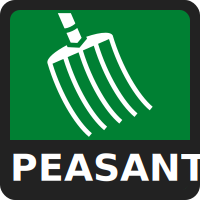
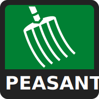

You can send these results by copying and pasting the URL at the top of the page or using the image below.
With your closest match as 100% and farthest as 0%, here is how closely you matched the other ideologies.


 
